RTR: Imperium Surrectum
RTR: Imperium SurrectumRhodes units
2022-12-30 · ahowl11
Hello! We have another DD ready for you today, focusing on another maritime faction on a very small island! This faction was able to defend against two attacks from both Demetrios and Mithradates, had naval supremacy and later on had a sizeable Kingdom in Caria and Lycia. We give to you: Rhodes!
AKONTISTAI
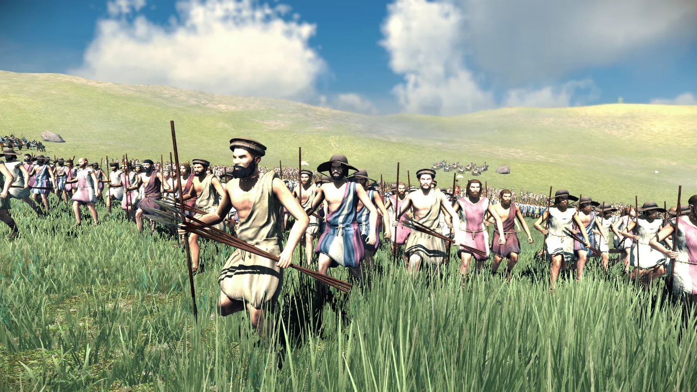
SLINGERS
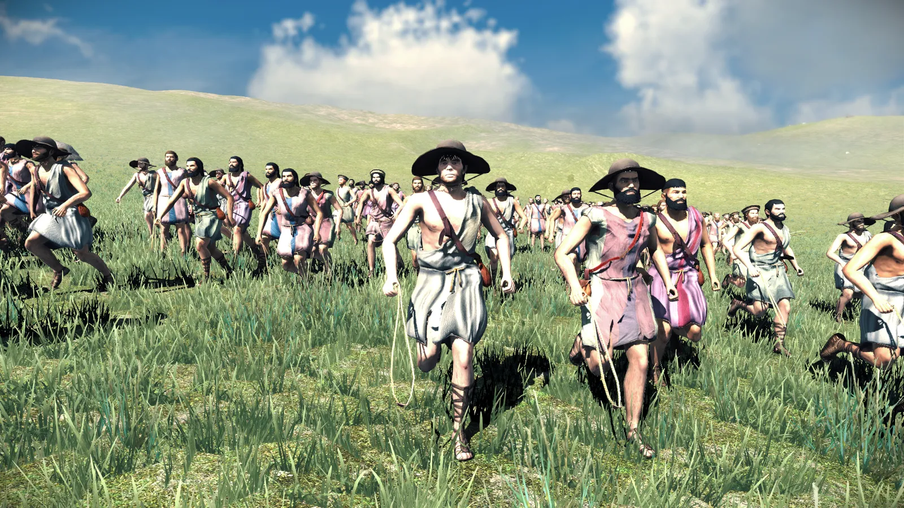
ARCHERS
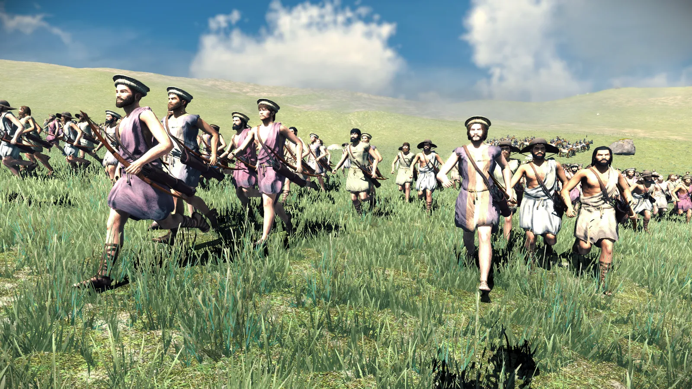
GREEK PELTASTS
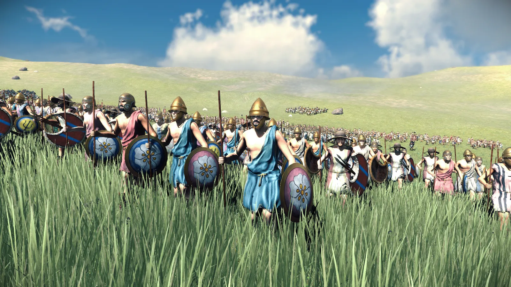
RHODIAN SLINGERS
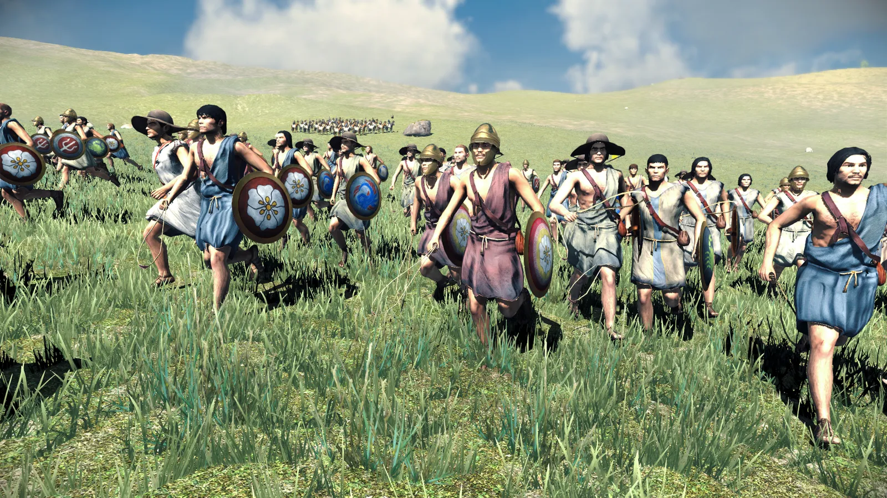
RHODIAN HOPLITES
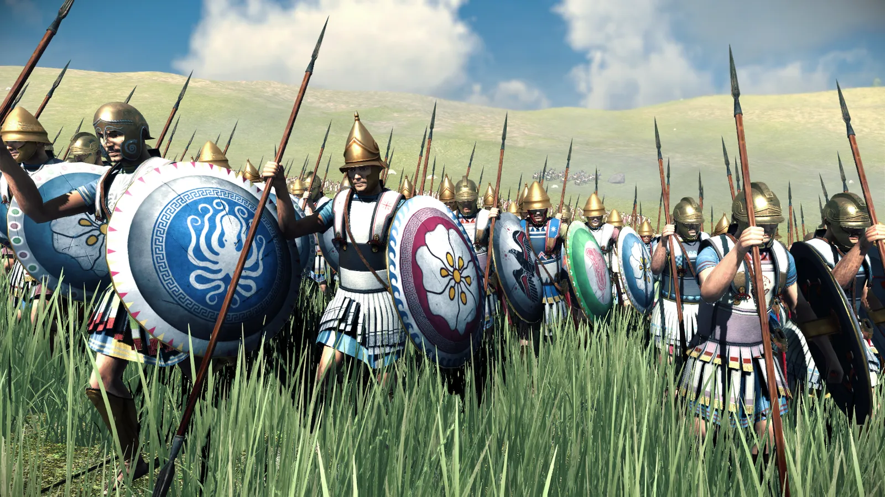
THUREOPHOROI
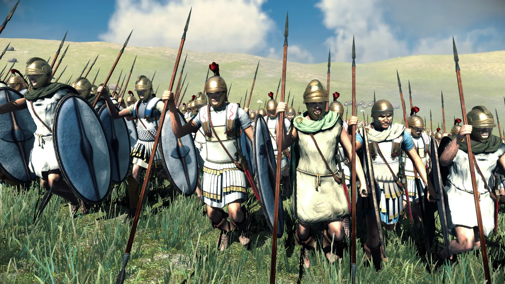
RHODIAN EPIBATAI (MARINES)
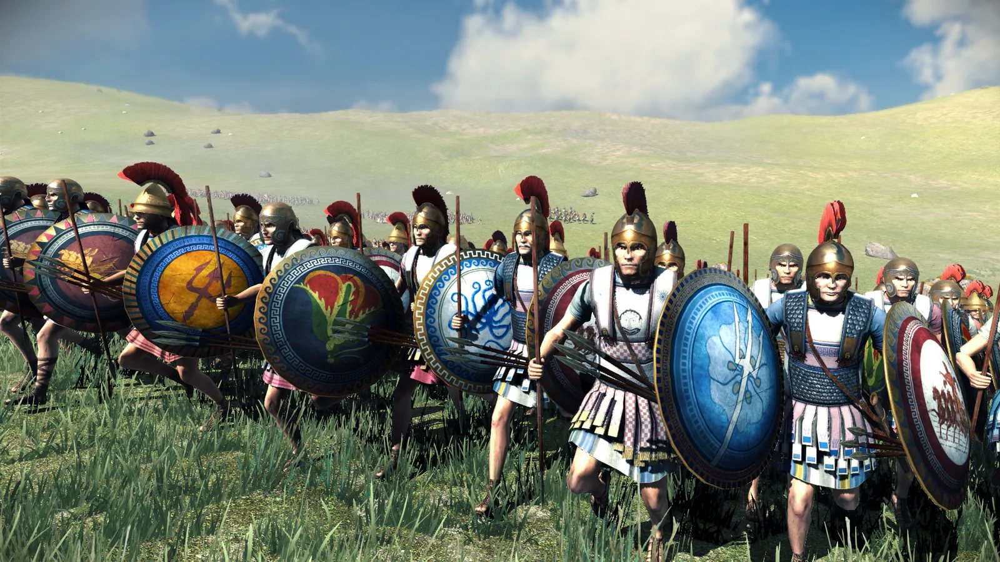
PRODROMOI
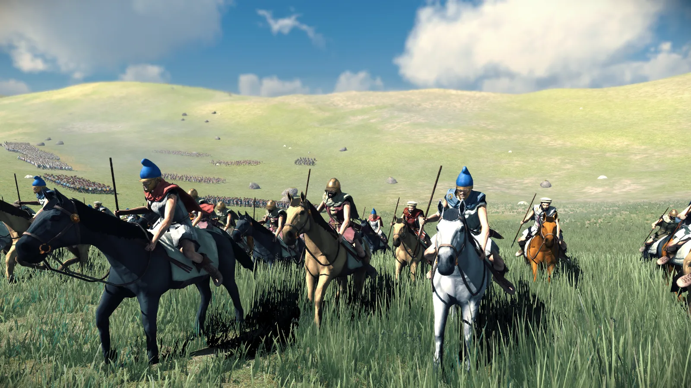
ASPIDOPHOROI (REFORM
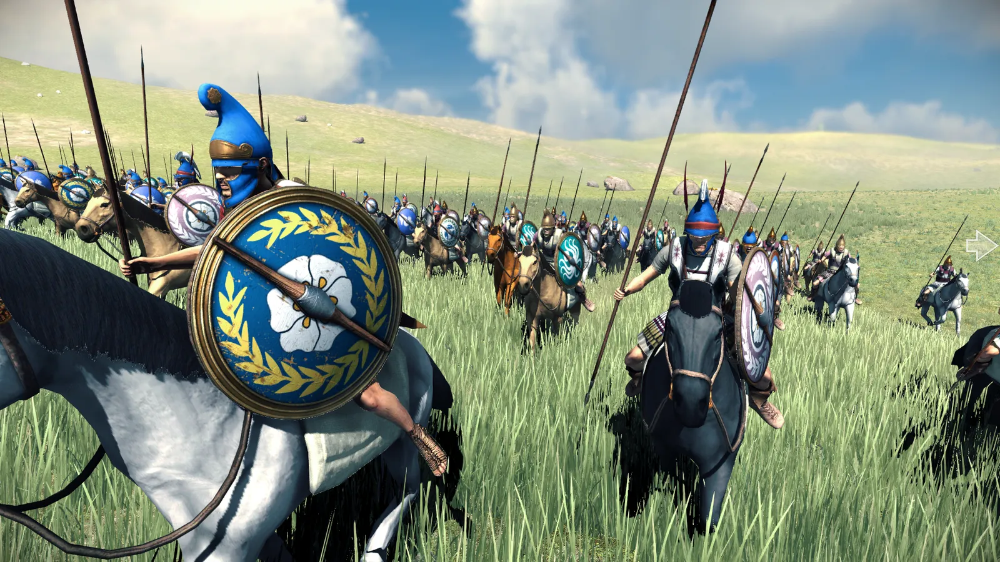
ACTION SHOTS
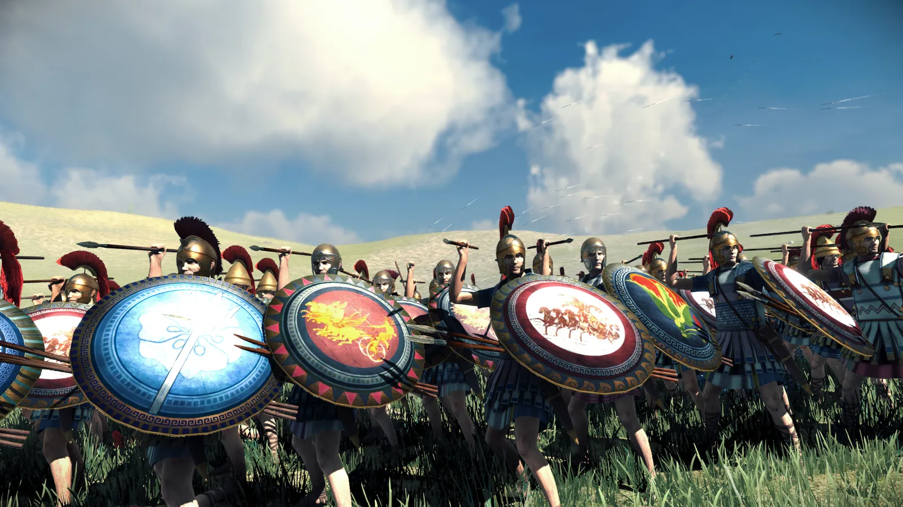
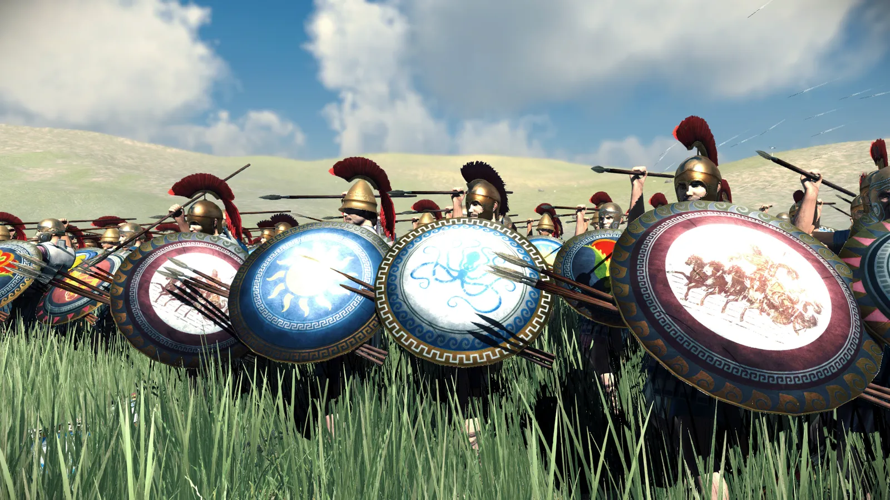
Rhodes will certainly be a difficult faction to play as, starting on such a small island and also having hardly any cavalry. Good strategy and some strokes of good luck will be needed for victory! We hope you enjoyed this latest DD, as we continue to work on the Greek world!